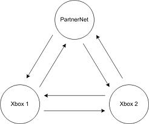

You can easily use NetSim 2 to test how your game handles the various network conditions specified in the Xbox Live TCRs. Microsoft ships simulations stored as XML files for use with NetSim 2. These simulations create the network conditions specified in the TCRs. You'll find these files in the following directory on your hard drive.
\Program Files\Microsoft Network Simulation Tool 2 for Xbox\Suites
The file name of each simulation contains the name of the TCR to which it applies. You can load each simulation, one at a time, and test for compliance with its specific TCR. When you're ready to begin testing, click the Start button, which is near the bottom of the NetSim 2 window. During the simulation, the Start button changes to a Stop button. Run your game and test it for compliance with the TCR. To halt the simulation, click Stop.
Note NetSim 2 begins processing network traffic as soon as you launch it. However, when it is not running a simulation, it does not apply simulation settings to the network traffic. It simply forwards all packages it receives. As a result, Xbox consoles can connect to the Internet through NetSim as needed without clicking the Start button. It is recommended that you establish connectivity to PartnerNet using the Ping PartnerNet tool with NetSim before starting a simulation.
In addition to using NetSim 2 to test your game against the Xbox Live TCRs, you can also use it to simulate real-world network conditions you think your game is likely to encounter. You can choose whether the network problems you simulate occur between all of the consoles, between the consoles and the Internet, or both.
To simulate real-world network conditions between all of the Xbox consoles, follow these steps.
It is possible to simulate problems with the connection to each individual Xbox console as well. To do so, use the following procedure.
To simulate problems between the consoles and the Internet, follow these steps.
You can combine these capabilities to simulate problems with multiple links. To do so, follow these steps.
Note These steps simulate problems on all links in the network. You can eliminate any of steps 2, 3, or 4 as needed for your specific simulation.
To simulate the bandwidth problems sometimes encountered on the Internet, you can use NetSim 2 to limit, or throttle, network bandwidth. Click the Bandwidth tab and select the Enable bandwidth throttling check box. Use the two input boxes in the page to enter the download and upload network bandwidth in bits per second.
You can simulate networks with latency problems by clicking the Latency tab and selecting the Enable artificial latency check box. Use the two input boxes in the page to enter the download and upload network latencies in bits per second.
Note Enabling latency introduces some computer-dependent overhead. On average, this overhead is in the range of 20 milliseconds. However, it could be longer or shorter on your computer.
Packet loss can occur as part of normal network operation. If a network is experiencing packet loss under normal loads, it is referred to as ambient packet loss. To simulate ambient packet loss with NetSim 2, click the Packet Loss tab and select the Enable packet loss check box. Use the Ambient packet loss drop-down lists to select the percentage of download and upload packets to be lost.
Periods of heavy activity cause a burst of packets to move across the network. During these burst periods, additional packets may be lost. The Packet Loss tab enables you to simulate these burst periods. To do so, first make sure packet loss is enabled. Next, set the percentage of addtional download and upload packets that you want lost during a burst. The percentages of burst and ambient packet loss for download must add up to no more than 100 percent. The same is true for the percentages of burst and ambient packet loss for upload.
In addition to setting the burst packet loss for download and upload, you can control duration of the network activity bursts. Use the input boxes labeled Burst duration(s) to set the length of download and upload bursts in milliseconds. Also, the final set of input boxes on this page enable you to set the times (also in milliseconds) between the download and upload bursts.
When your test Xbox consoles connect to PartnerNet, and when players' Xbox consoles connect to Xbox Live, the game may encounter delays while the server and console exchange authentication and handshaking information. To simulate this type of delay, click the Authentication tab. Next, select the Enable key-exchange delay check box. Use the input box to set the delay in milliseconds.
When simulating network performance, the most important thing to remember is that the properties (bandwidth, latency, packet loss, and authentication delay) are assigned by node and not by link. The diagram below helps illustrate what this means.

Illustration A Test Network with Two Consoles and Links to PartnerNet
The test network in this diagram has two Xbox consoles, both of which can communicate with PartnerNet. Therefore, there are three nodes in the network. Each node is connected to the other two by an uplink and a downlink. It's important to remember that which connection is an uplink and which is a downlink depends on the node. That is, the uplink for one node is the downlink for another.
For instance, notice in the diagram that there is a connection pointing from the PartnerNet node to the node for Xbox 1. That link is the uplink for the PartnerNet node and the downlink for Xbox 1. Likewise, the arrow that points from Xbox 1 to PartnerNet is the uplink for Xbox 1 and the downlink for PartnerNet.
The reason this is important to understand is because NetSim 2 combines the property values from the nodes on both ends of the link to determine the final property value for the link.
Suppose, for example, that you want to set the latency for the link that points from Xbox 1 to PartnerNet. As previously stated, from the point of view of Xbox 1, this is the uplink. From the point of view of PartnerNet, this is the downlink. Therefore, the latency for the link is calculated as
LatencyOfLink = Xb1UplinkLatency + PnetDownlinkLatency
where LatencyOfLink is the overall latency of the link, Xb1UplinkLatency is the uplink latency of Xbox 1, and PnetDownlinkLatency is the downlink latency of PartnerNet. The general formula for calculating latency on any given link between two nodes is
LatencyOfLink = Node1Latency + Node2Latency
where LatencyOfLink is the overall latency of the link, Node1Latency is the latency of node 1, and Node2Latency is the latency of node 2.
Packet loss works in a similar manner. If you want to calculate the ambient packet loss on the link from Xbox 1 to PartnerNet, use the formula
PLRTotal = PLRXb1 + ((100 - PLRXb1) * PLRPnet)/100
where PLRTotal represents the total packet loss for the link, PLRXb1 is the packet loss on the uplink for Xbox 1, and PLRPnet is the packet loss for the downlink on the PartnerNet node. The general formula for calculating packet loss on a given link is
PLRTotal = PLRnode1 + ((100 - PLRnode1) * PLRnode2)/100
where PLRTotal represents the total packet loss for the link, PLRnode1 is the packet loss on node 1, and PLRnode2 is the packet loss for node 2.
When you're simulating packet loss, you can introduce burst conditions that represent periods of high network activity. The burst duration for a given link between two nodes is calculated as
BurstDuration = MAX(Node1Duration,Node2Duration)
where BurstDuration is the burst duration of the link (in milliseconds), MAX represents a function that finds the maximum of two values, Node1Duration is the burst duration of node 1, and Node2Duration is the burst duration of node 2.